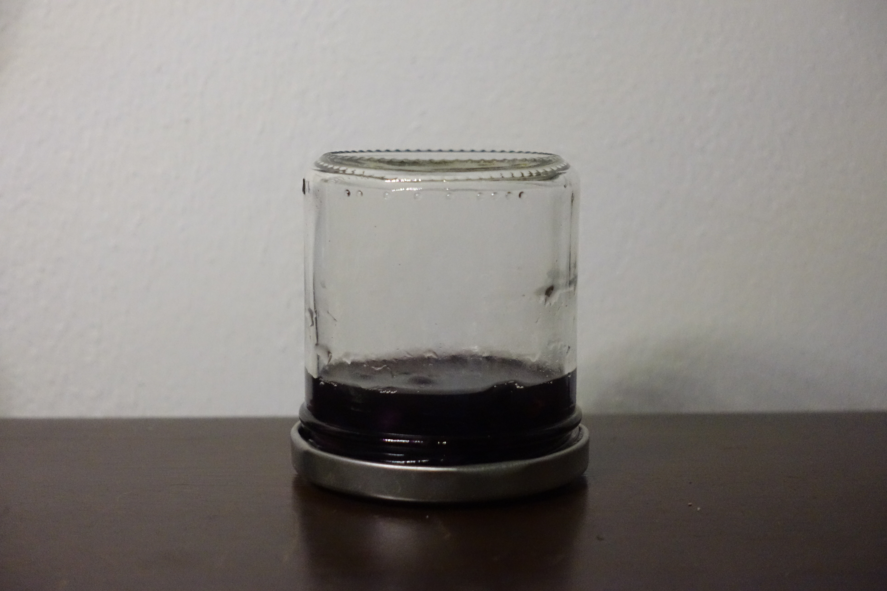
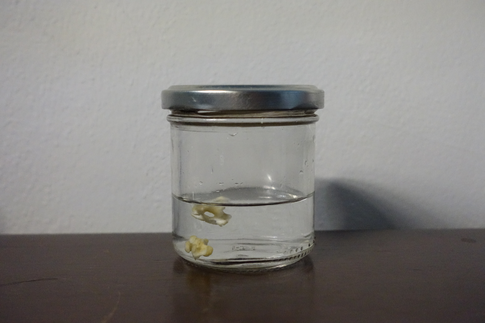

ingredients
left over bones from the stock (you can see the recipe for the stock here) / dried black bean / dish soap / baking soda / lye water / hydrogen peroxide
method
make inlay powder by :
1. soak cup of black bean in filtered water for overnight
2. soak an additional bone for 36+ hours
3. rinse then let dry completely
4. grind them into powder
5. set them aside

gather bones from the stock

wash with dish soap

bring to boil with 2tbsp dish soap and baking soda, let rest for 2+ hours
rinse then let dry completely
soak in lye water for 2+ hours
rinse then let dry completely
soak in hydrogen peroxide for 36+ hours
rinse then let dry completely


pray with 108+ bows

43 for chicken
fill in the empty stripes
stop eating meat for life